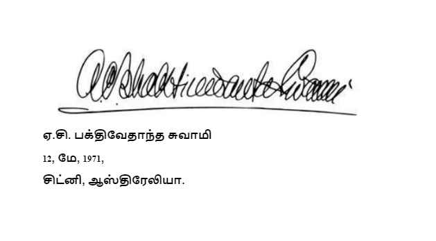

பகவத் கீதை உண்மையுருவில்
மேக்மில்லன் 1972
முழு பதிப்பு
சமஸ்கிருத மூலப்பதம், தமிழ் உச்சரிப்பு வடிவம், மொழி பெயர்ப்பு மற்றும் விரிவான பக்திவேதாந்த பொருளுரைகளுடன்
தெய்வத்திரு
அ.ச. பக்திவேதாந்த சுவாமி பிரபுபாதா
அகில உலக கிருஷ்ண பக்தி இயக்கத்தின் ஸ்தாபக ஆச்சாரியர்
தமிழாக்கம்
ஸ்ரீமான் ஆத்ம தத்வ தாஸ்
மேக்மில்லன் நிறுவனம், நியூ யார்க், நியூ யார்க், கோலியர்-மெக்மில்லன் லிமிடெட், லண்டன்
வேதாந்த தத்துவத்திற்கு “கோவிந்த பாஷ்யம்” எனும் அருமையான பொருளுரையை வழங்கிய
ஸ்ரீல பலதேவ வித்யாபூஷணர்
அவர்களுக்கு சமர்ப்பணம்
முன்னுரை
பகவத்-கீதை என்பது மிகவும் நன்றாக அறியப்பட்ட, பெரும்பாலும் அடிக்கடி மொழிபெயர்க்கப்படும் வேத சமய நூலாகும். இது ஏன் மேற்கத்திய சிந்தனையை ஈர்த்துள்ளது என்பது சுவாரஸ்யமான கேள்வியாகும். இதில் அமைந்துள்ள காட்சி, இரண்டு பெரிய படைகள், களத்தில் ஒருவருக்கொருவர் எதிரெதிரே நிறுத்தப்பட்டு, கொடிபறக்க, போருக்கு ஆயத்தமாகின்ற அமைப்பை வர்ணிக்கின்றது. அதில் தெளிவற்ற நிலை உருவாகி, அதனால் அர்ஜுனரும் அவரது தேரோட்டியான கிருஷ்ணரும் இருபடைகளுக்கிடையே மேற்கொண்ட தங்களின் உரையாடல் மூலம் கூறவருவது என்னவென்றால், முடிவெடுக்க முடியாத அர்ஜுனனின் அடிப்படைக் கேள்விகளான: அவர் போர்புரிந்து நண்பர்களையும் உறவினர்களையும் கொல்ல வேண்டுமா? என்பதாகும். கிருஷ்ணர் அர்ஜுனனுக்கு தன்னுடைய பிரபஞ்சத் தோற்றத்தை காட்டியதில் மர்மம் நிறைந்துள்ளது. அதில் சமய வாழ்க்கைப் பாதையின் மீதான சிக்கலான பார்வையையும் முறைப்படி கொண்டுள்ளது, மேலும் ஞானத்தின் பாதைகள், தொழில்கள், ஒழுக்கநெறி, நம்பிக்கை மற்றும் அதன் உள்தொடர்புகள், மற்ற காலங்களிலும் இடங்களிலும் மற்ற பிற மதங்களை பின்பற்றுபவர்களைத் தொல்லை செய்யும் பிரச்சனைகள் ஆகியவற்றின் கண்ணோட்டமும் கொண்டுள்ளது. பக்தி ரீதியான பேச்சுக்கள் என்பது ஆன்மீக திருப்திக்கான வெளிப்படையான வழியே தவிர வெறும் கவிதை உணர்ச்சியின் வெளிப்பாடு அல்ல. தென்னிந்தியாவின் நீண்ட படைப்பான பாகவத புராணத்தை அடுத்து, அடிக்கடி மேற்கோள் காட்டப்பட்ட கௌடிய வைணவ பரம்பரையின் தத்துவ நூல் கீதையாகும். தெய்வத்திரு பக்திவேதாந்த சுவாமியால் சமீபமாக பிரதிநிதிக்கப்படுகின்ற இப்பரம்பரையானது நீண்ட குருசீடப்பரம்பரையின் ஆச்சாரியர்களின் தொடர்பு கொண்டதாகும். இந்த வைஷ்ணவப் பரம்பரை ஸ்ரீ கிருஷ்ண சைதன்யரால் (1486-1533) வங்காள தேசத்தில் நிறுவப்பட்டது அல்லது புத்துயிரளிக்கப்பட்டது என்று கூறலாம். மேலும் தற்போது இந்திய துணைக் கண்டத்தின் கிழக்குப் பகுதியில் அமைந்த பலமான தனிதத்துவமான தர்மத்தின் சக்தியாகும். இந்த கௌடிய வைணவ சம்பிரதாயத்திற்கு ஸ்ரீ கிருஷ்ணரே முழுமுதற் கடவுளாவார், மேலும் அவர் மற்ற தெய்வங்களின் அவதாரம் அல்ல. இந்த சம்பிரதாயத்தில் பக்தியே மனிதனுக்கும் கடவுளுக்கும் இடையிலான அன்பு கொண்ட மிகப் பலம் பொருந்திய சமய சக்தியாகும். அதன் வழிமுறையானது ஒருவருடைய அனைத்து செயல்களையும் இறைவனுக்கு அர்ப்பணிப்பதாகும். மேலும் ஒருவர் புனித நூல்களிலிருந்து கிருஷ்ணரின் கதைகளைக் கேட்பது; கிருஷ்ணரின் பெயரை ஜபிப்பது; மேலும் கிருஷ்ணரின் விக்ரஹத்தை சுத்தம் செய்தல் அலங்கரித்தல், அபிஷேகம் செய்தல், அவருக்கு நைவேத்தியம் அளித்தல்; அவருக்கு அர்ப்பணித்த பிரசாதத்தின் மீதத்தை உண்ணுதல் போன்றவற்றினால் ஒருவர் அவரின் கருணையை உள்வாங்குகிறார். ஒருவர் தனக்குள் மாற்றம் ஏற்படும் வரை பல முறை இச்செயல்களையும் வேறு பல செயல்களையும் செய்துக்கொண்டிருப்பார். பக்தர் கிருஷ்ணருக்கு நெருக்கமான ஒருவராக மாற்றப்பட்டு அவரை நேருக்கு நேராக காண்கிறார்.
பக்திவேதாந்த ஸ்வாமி அவர்கள் கீதையைப் பற்றி இந்த கண்ணோட்டத்தில் பொருளுரையை கொடுத்துள்ளார் என்பதால் அதுவே அதிகாரப் பூர்வமானதாகும். அதற்கும் மேலாக, இந்த மொழிபெயர்பானது மேற்கத்திய வாசகர்களுக்கு, எவ்வாறு ஒரு கிருஷ்ண பக்தர் தமது சொந்த கிரந்தத்திற்கு விளக்கம் அளிக்கிறார் என்பதை காண ஒரு தனித்துவமிக்க வாய்ப்பை வழங்குகியுள்ளது. இது வேத பாரம்பரிய விளக்க உரையின் மிகவும் பிரபலமான செயலாகும். பல கோணங்களில் இருந்து காணுகையில் இப்புத்தகம் ஒரு வரவேற்புக்குரிய பதிப்பாக இருக்கின்றது. மேலும் இது கல்லூரி மாணவர்களுக்கு ஒரு மதிப்புமிக்க பாடபுத்தகமாக சேவை புரிகின்றது. திறமைமிக்க மொழிபெயர்ப்பாளரின் தெளிவான, ஆழ்ந்த, சமய அர்த்தம் கொண்ட வாசகத்தைக் கேட்க வாய்ப்பளிக்கிறது. இது கௌடிய வைஷ்ணவ பரம்பரையின் ஆதியான மற்றும் மிகவும் ஏற்றுக்கொள்ளும் விதமான கருத்துக்களை நம்மை உள்ளார்ந்து காண வைக்கின்றது. சமஸ்கிருதத்தை தேவநாகரியிலும் மற்றும் அதன் மறுவிளக்கமும் தருவதால் சமஸ்கிருத அறிஞர்களுக்கு குறிப்பிட்ட சமஸ்கிருத அர்த்தங்களை மறுவிளக்கம் செய்ய அல்லது விவாதிக்க ஒரு வாய்ப்பை வழங்குகிறது. இருப்பினும், சுவாமியின் தரமிக்க சமஸ்கிருத பாண்டித்துவம் குறித்து கருத்து வேறுபாடும் இல்லை என்பது என் கருத்து. இறுதியாக, எந்த ஒரு நிபுணத்துவம் இல்லாதவர்களுக்கு ஆங்கில மொழித்திறனை வளர்த்துக் கொண்டு பக்தி வழக்கத்துடன் படிக்கக் கூடிய வாய்ப்பை வழங்கியுள்ளது. இது எந்த ஒரு சந்தேகமுமின்றி உணர்ச்சிவசப்படும் வாசகர்களைக் முன்னோக்கி நகர செய்கின்றது. அதில் வியக்கத்தக்க சித்திரங்களை காணமுடிகின்றது. இந்திய பாரம்பரிய சமய ஓவியங்களைப் பற்றி நன்கறிந்தவர்கள் வியக்கும் வகையில் இருப்பினும், இவற்றை இயற்றியவர்கள் அமெரிக்க பக்தர்களே. ஏராளமான அறிஞர்கள், கௌடிய வைணவ மாணவர்கள் மற்றும் பாரம்பரிய வேத சிந்தனையில் ஆர்வமுள்ள மேற்கத்திய வாசகர்கள் அனைவருக்கும் சுவாமி பக்திவேதாந்தா அவர்கள் மாபெரும் சேவை புரிந்துள்ளார். ஏற்கனவே பலரும் அறிந்த வாசகத்திற்கு ஒரு புதிய உயிரோட்டமுள்ள கருத்துரையைக் கொடுத்ததன் மூலம் அவர் நமது புரிதலை பன்மடங்கு அதிகரித்துள்ளார். மற்றும் இந்நாளில், திசைமாறிச் சென்ற சமுதாயத்தில் விவாதங்களுக்கு அவசியமில்லை.
-பேராசிரியர் எட்வர்ட் சி. டிமோக், ஜேஆர்.
தெற்காசிய மொழிகள் மற்றும் நாகரீகத்துறை
சிகாகோ பல்கலைக்கழகம்.
இப்போது வெளியிடப்படும் உருவில்தான் முதலில் நான் ‘பகவத் கீதை - உண்மையுருவில்’ என்ற நூலை எழுதினேன், இந்நூல் முதலில் பிரசுரமானபோது, விளக்கப்படங்களும், ஸ்ரீமத் பகவத் கீதையின் பெரும்பாலான மூலப்பதங்களுக்கு விளக்கவுரைகளும் இல்லாமல், துரதிருஷ்டவசமாக நானூறு பக்கங்களுக்கும் குறைவானதாக அது வெளியிடப்பட்டது. ஸ்ரீமத் பாகவதம், ஸ்ரீ ஈஷோபநிஷதம் போன்ற எனது பிற நூல்களிலெல்லாம் - மூல ஸ்லோகம், ஆங்கில உச்சரிப்பு வடிவம், ஆங்கிலத்தில் பதவுரை, மொழிபெயர்ப்பு மற்றும் பொருளுரைகள் ஆகியவற்றுடன் வெளியிடப்பட்டிருப்பதால், நூல் திட்டமானதாயும், புலமையுடையதாயும் இருப்பதுடன் உட்பொருளும் சுய ஆதாரம் கொண்டவையாய் இருக்கின்றன. எனவே, எனது மூலக் கையெழுத்துப் பிரதியைச் சுருக்க வேண்டிவந்த போது நான் அவ்வளவாய் மகிழ்வடையவில்லை. ஆனால், பின்னர் ‘பகவத் கீதை - உண்மையுருவில்’ நூலுக்கான தேவை கணிசமான முறையில் அதிகரிக்கவே, பற்பல அறிஞர்களும், பக்தர்களும் இந்நூலை முழு வடிவில் வெளியிடுமாறு என்னைக் கேட்டுக் கொண்டனர். திருவாளர்கள் மேக்மில்லன் கம்பெனியினர் முழு பதிப்பை பிரசுரிக்க உடன்பட்டனர். இவ்வாறு கிருஷ்ண பக்தி இயக்கத்தை வலுவாயும், முன்னேற்றப் பாதையிலும் நிறுவுவதற்காக, இந்த பெரும் ஞான நூலின் பரம்பரையின் முழுமையான பொருள் விளக்கங்களோடு கூடியதான மூலப் பிரதியை வெளியிடுவதற்கான முயற்சி இப்போது செய்யப்பட்டுள்ளது.
எமது கிருஷ்ண பக்தி இயக்கம் நேர்மையானதும், சரித்திரப் பூர்வமாக அதிகாரம் வாய்ந்ததும், இயற்கையானதும், பகவத் கீதையை உண்மையுருவில் என்பதை ஆதாரமாகக் கொண்டதால் இது தெய்வீகமானதுமாகும். கொஞ்சங் கொஞ்சமாக உலகெங்கிலும் அதிலும் முக்கியமாக இளைய தலைமுறையிடையே இந்த இயக்கம் மிகவும் பிரசித்தி பெற்றுக்கொண்டு வருகிறது. பழைய தலைமுறையினரும்கூட மேன்மேலும் இதில் ஆர்வமுடையவர்களாகி வருகின்றனர். வயதான பெரியோரும் மிகவும் இவ்வியக்கத்தினால் கவரப்பட்டு வருகின்றனர். அது எந்த அளவிற்கென்றால் எனது சீடர்களின் தந்தையர்களும், பாட்டனார்களும் எமது பெரும் இயக்கமான அகில உலக கிருஷ்ண பக்தி இயக்கத்தின் ஆயுள் உறுப்பினராக இணைவதன் மூலம் தங்கள் ஆதரவை அளித்து வருகின்றனர். லாஸ் ஏன்ஜல்ஸ் நகரிலே தாய் தந்தையர் பலர், கிருஷ்ண பக்தி இயக்கத்தை உலக முழுவதும் தலைமை வகித்து நடத்தும் இவ்வுதவிக்கான தங்களது நன்றியுணர்வை தெரிவிக்க பலமுறை என்னை வந்து காண்கின்றனர். அவர்களில் சிலர் நான் இந்த இயக்கத்தை அமெரிக்காவில் ஆரம்பித்தது உண்மையில், அமெரிக்க மக்களது நல்லதிர்ஷ்டத்தாலேயே என்று கூறுவதுண்டு. ஆனால் இவ்வியக்கத்தின் மூலமான தந்தை பகவான் ஸ்ரீ கிருஷ்ணரே. ஏனெனில் இது பன்னெடுங்காலத்திற்கு முன்பே துவங்கப்பட்டு, குருசீடப் பரம்பரை மூலமாக மனித சமுதாயத்திற்கு கீழிறங்கி வருவதேயாகும். இவ்விஷயத்தில் எனக்கு ஏதேனும் நன்மதிப்பு இருந்தால், அது தனிப்பட்ட முறையில் என்னைச் சேர வேண்டியதே அல்ல. இதற்கான பெருமையனைத்தும் எனது நித்திய ஆன்மீக குருவான, தெய்வத்திரு ஓம் விஷ்ணுபாத பரமஹம்ஸ பரிவ்ரஜகாச்சார்ய 108(அஷ்டோத்ர) ஸ்ரீ ஸ்ரீமத் பக்தி சித்தாந்த ஸரஸ்வதி கோஸ்வாமி மஹாராஜர் பிரபுபாதாவையே சேரும்.
இவ்விஷயத்தில் தனிப்பட்ட முறையில் எனக்கு ஏதேனும் புகழ் இருப்பின், அது நான் பகவத் கீதையை கலப்படமின்றி உண்மையுருவில் உள்ளது உள்ளபடி அளிக்க முயன்றது மட்டுமே. எனது இந்த ‘பகவத் கீதை உண்மையுருவில்’ வெளிவரும் முன்பு வெளியான கீதையின் மற்ற ஆங்கிலப் பதிப்புகளில் பெரும்பாலானவை யாரேனும் ஒருவரது சுய ஆவல்களைப் பூர்த்தி செய்யும் நோக்கத்தில் அறிமுகப்படுத்தப்பட்டவையே. ஆனால் பகவத் கீதையை உண்மையுருவில் அளிப்பதற்கான எமது முயற்சியோ, முழுமுதற் கடவுளான ஸ்ரீகிருஷ்ணரது நோக்கத்தை வெளிப்படுத்துவதேயாகும். கிருஷ்ணரது எண்ணத்தை எல்லோரும் அறியச் செய்வதே எமது நோக்கம். அரசியல்வாதி, தத்துவஞானி அல்லது விஞ்ஞானி போன்ற ஏதோ ஒரு ஜடக் கற்பனையாளரது சுய அபிப்பிராயத்தை பிரபலப்படுத்துவது அல்ல. ஏனெனில் அவர்கள் மற்ற எல்லாவிதமான அறிவையும் கொண்டிருந்தாலும் அவர்களிடம் கிருஷ்ணரைப் பற்றிய அறிவு சிறிதும் இல்லை. ‘மன்-மனா பவ மத் பக்தௌ மத் யாஜி மாம் நமஸ்குரு,’ என்றெல்லாம் ஸ்ரீகிருஷ்ணர் கூறுகையில், அறிஞர்களாய் அறியப்பட்ட சிலர் கூறுவது போல் ‘கிருஷ்ணரும் அவருக்குள்ளிருந்து கூறும் ஆன்மாவும் வெவ்வேறு’ என்று நாம் தவறான முறையில் அர்த்தம் கற்பிப்பது இல்லை. கிருஷ்ணர் பூரணமானவர், எனவே கிருஷ்ணரது பெயர், கிருஷ்ணரது உருவம், கிருஷ்ணரது குணம், கிருஷ்ணரது லீலைகள் இவைகளிடையே எந்த வேறுபாடும் இல்லை. பரம்பரை முறையின் (குருசீட வழிமுறை) மூலம் கிருஷ்ணரது பக்தரல்லாத எவருக்குமே கிருஷ்ணரது இந்தப் பூரணத் தன்மையைப் புரிந்து கொள்வது மிகக் கடினமே. பொதுவாக, பெயரளவிலான அறிஞர்களாகவும், அரசியல்வாதிகளாகவும், தத்துவஞானிகளாகவும், ஸ்வாமிகளாகவும் அறியப்படுவோர், கிருஷ்ணரைப் பற்றிய பக்குவ ஞானமின்றி கீதைக்கு பொருளுரை எழுதுகையில் பகவான் ஸ்ரீ கிருஷ்ணரைப் புறக்கணிக்கவோ அல்லது அழிக்கவோ முயற்சி செய்கின்றனர். இத்தகு அங்கீகரிக்கப்படாத கருத்துரைகள் ‘மாயாவாத பாஷ்யங்கள்’ என அறியப்படுகின்றன. பகவான் ஸ்ரீ சைதன்யர் இத்தகையவர்களைப் பற்றி நமக்கு எச்சரிக்கை செய்துள்ளார். மாயாவாதக் கண்ணோட்டத்தில் பகவத் கீதையை புரிந்து கொள்ள முயலும் எவருமே பெரும் அபத்தத்தையே செய்வதாக ஸ்ரீ சைதன்ய மகாப்பிரபு தெளிவாக கூறியிருக்கின்றார். இந்த பெரும் அபத்தத்தின் விளைவாக, கீதையை இத்தவறான முறையில் கற்போர், ஆன்மீகப் பாதையின் வழியில் நிச்சயமாய் குழப்பப்பட்டு, இறைவனின் இடத்திற்கு திரும்பிச் செல்ல இயலாதவர்களாகிவிடுவது திண்ணமே.
பிரம்மாவின் ஒரு தினமான அதாவது நமது 8,600,000,000 வருடங்களுக்கு ஒரு முறை, எந்த நோக்கத்திற்காய் பகவான் ஸ்ரீ கிருஷ்ணர் இவ்வுலகிற்கு வருகின்றாரோ, அதே நோக்கத்திற்கு, பந்தப்பட்ட ஜீவாத்மாவை வழி நடத்துவதற்காக பகவத் கீதையை உள்ளது உள்ளபடி அளிப்பதே எமது ஒரே இலட்சியமாகும். கிருஷ்ணரது இந்த நோக்கம் பகவத் கீதையில் கூறப்பட்டிருக்கின்றது, இதை அவ்வாறே நாம் ஏற்றுக்கொள்ள வேண்டியது அவசியம்; இல்லாவிட்டால் பகவத் கீதையையோ, அதை மொழிந்த பகவான் ஸ்ரீ கிருஷ்ணரையோ புரிந்துகொள்ள முயல்வதில் பொருள் ஏதுமில்லை. முதலாவதாக, பல நூறு கோடி வருடங்களுக்கு முன்பு பகவான் ஸ்ரீ கிருஷ்ணர் பகவத் கீதையை சூரிய தேவனுக்கு உபதேசம் செய்தார். கிருஷ்ணரது அத்தாட்சியை ஏற்று, இந்த உண்மையை அவ்வாறே ஏற்றுக்கொண்டு, தவறான கருத்துரைகளைக் கற்பிக்காமல் பகவத் கீதையின் சரித்திர முக்கியத்துவத்தை இவ்வாறு நாம் புரிந்துகொள்ள வேண்டும். கிருஷ்ணரது எண்ணத்திற்கு விரோதமாக, அவரது கூற்றிற்கு எந்தவிதமான மதிப்பும் கொடுக்காமல் பகவத் கீதைக்கு சுய அர்த்தம் கற்பிப்பது மாபெரும் குற்றமாகும். இந்தக் குற்றத்தைச் செய்யாமல் தன்னைக் காத்துக்கொள்ள வேண்டுமென்றால், பகவான் ஸ்ரீ கிருஷ்ணரது முதல் சீடனான அர்ஜுனனால் அவரைப்பற்றி நேரடியாக புரிந்துகொள்ளப்பட்டபடி, முழுமுதற் கடவுளாகவும் பரமபுருஷராகவும் ஸ்ரீகிருஷ்ணரை ஒருவன் புரிந்துகொள்ள வேண்டியது இன்றியமையாததாகும். பகவத் கீதையின் இத்தகு அறிவே உண்மையில் பலனளிப்பதும் வாழ்வின் நோக்கத்தை அடைவதில் மனித சமுதாயத்திற்கு சேவை செய்யத் தகுதியுடையதும் ஆகும்.
வாழ்வின் உன்னதமான பக்குவத்தை அளிப்பதால், ‘கிருஷ்ண பக்தி இயக்கம்’ மனித குலத்திற்கு இன்றியமையாததாகும். இது எவ்வாறு என்பது பகவத் கீதையில் முழுமையாக விவரிக்கப்பட்டுள்ளது. துரதிருஷ்டவசமாக, ஜடக் கற்பனையாளர்கள் தமது அசுர நாட்டங்களைப் பரப்புவதற்காயும், வாழ்வின் எளிய நோக்கங்களைப் பற்றிய சரியான அறிவினின்றும் மக்களைப் பாதை தவறச் செய்வதற்காகவும் பகவத் கீதையைப் பயன்படுத்திக் கொண்டிருக்கின்றனர். கடவுள் - கிருஷ்ணர் எவ்வாறு மிக மிகப் பெரியவர் என்பதையும், உயிர்வாழிகளின் (ஜீவாத்மாக்களின்) உண்மை நிலை என்ன என்பதையும் ஒவ்வொருவரும் அறியவேண்டும். உயிர்வாழும் ஒவ்வொருவரும் நித்தியமாகத் தொண்டரே, சேவகரே என்றும், கிருஷ்ணருக்குத் தொண்டாற்றாவிடில், ஒருவன் ஜட இயற்கையின் முக்குணங்களின் பல்வேறு விதங்களில், மாயைக்குத் தொண்டாற்ற வேண்டிவரும் என்பதையும், இதன் விளைவாக பிறப்பு இறப்புச் சுழலில் முடிவின்றி ஒருவன் அலைய வேண்டிவரும் என்பதையும் ஒவ்வொருவரும் அறியவேண்டும். பெயரளவில் முக்தி பெற்றவர்களாக அறியப்படும் மாயாவாதி கற்பனையாளனும் இந்த வழிமுறைக்கு அடிபணியத்தான் வேண்டும். இந்த அறிவு, மிகப் பெரும் ஒரு விஞ்ஞானத்தை உருவமைப்பதாக இருப்பதால், ஒவ்வொரு உயிர்வாழியும் தனது சுய நன்மைக்காக இதைக் கேட்டறிந்து கொள்ளவேண்டியது மிக அவசியமாகும்.
மக்கள் பொதுவாக, அதிலும் முக்கியமாக இந்தக் கலியுகத்தில், கிருஷ்ணரது புறச்சக்தியால் மிகவும் கவரப்பட்டவர்களாய், உலகாயத வசதிகளின் முன்னேற்றத்தாலேயே ஒவ்வொரு மனிதனும் மகிழ்ச்சியடைவான் என்ற தவறான எண்ணம் கொண்டவர்களாக இருக்கின்றனர். ஜட அல்லது புறச்சக்தி மிக வலிமை வாய்ந்தது என்பதைப் பற்றிய அறிவு அவர்களுக்கு இல்லை. ஏனெனில் ஜட இயற்கையின் கடும் நியதிகளால் ஒவ்வொருவரும் இறுகப் பிணிக்கப்பட்டிருக்கின்றனர். உயிர்வாழி ஆனந்தமாக இறைவனின் அங்க உறுப்பானதால், அவருக்கு உடனடித் தொண்டு புரிவதே அவனது இயற்கையான செயல்பாடாகும். மாயையின் காரணமாக, ஒருவன் தன்னை என்றுமே மகிழ்வடையச் செய்யாதவையான, தனது சுயப்புலன் திருப்திக்கு பல்வேறு விதங்களில் தொண்டாற்றுவதன் மூலம் இன்புற முயல்கிறான். தனது சுய ஜடப் புலன்களைத் திருப்தி செய்து கொள்ள முயல்வதை விட்டுவிட்டு, இறைவனது தெய்வீகப் புலன்களை ஒருவன் திருப்தி படுத்தவேண்டும். இதுவே வாழ்வின் உன்னதமான பக்குவநிலை. இறைவன் இதையே விரும்புகிறார், இதையே அவர் கேட்கிறார். பகவத் கீதையின் இந்த மையப் பொருளை ஒருவன் புரிந்து கொள்ள வேண்டும். நமது கிருஷ்ண பக்தி இயக்கமானது இந்த மையக் கருத்தையே உலகம் முழுமைக்கும் கற்றுக்கொடுத்துக் கொண்டிருக்கிறது. ஏனெனில், நாம் பகவத் கீதை உண்மையுருவின் நோக்கத்தை களங்கப்படுத்த வில்லை. இறைவனது நேரடி வழி காட்டலின் கீழ் பகவத் கீதையின் நடைமுறை அறிவை பெறுவதற்காய், பகவத் கீதையைக் கற்பதன் மூலம் பலனடைவதில் உண்மையிலேயே கருத்துடையவர் யாராயினும் கிருஷ்ண பக்தி இயக்கத்தினின்று உதவி பெறவேண்டும். எனவே, இங்கே நாங்கள் அளித்துள்ளபடி ‘பகவத் கீதையை உண்மையுருவில் கற்பதால் மக்கள் உன்னதமான பலனடைவார்கள் என நம்புகிறோம். இவ்வாறு யாரேனும் ஒரே ஒரு மனிதராவது, இறைவனின் தூயபக்தரானாலே எமது முயற்சி பெரும் வெற்றியடைந்ததாய் நாம் கருதுவோம்.
ஓம் அக்ஞான திமிராந்தஸ்ய
ஞானாஞ்ஜன ஷலாகயா
சக்ஷுருன்மீலிதம் யேன
தஸ்மை ஸ்ரீ-குரவே நம:
ஸ்ரீ-சைதன்ய-மனோ-பீஷ்டம்
ஸ்தாபிதம் யேன பூ-தலே
ஸ்வயம் ரூப: கதா மஹ்யம்
ததாதி ஸ்வ-பதாந்திகம்
நான் அறியாமையெனும் முழுஇருளில் பிறந்திருந்தேன். எனது ஆன்மீக குரு, ஞானம் எனும் ஒளியால் என் கண்களைத் திறந்தார். அவருக்கு முழுமரியாதையுடன் என் வணக்கங்களைச் சமர்ப்பிக்கின்றேன். ஸ்ரீ சைதன்யரின் விருப்பத்தைப் பூர்த்தி செய்வதற்கான இயக்கத்தை இவ்வுலகில் நிறுவிய ஸ்ரீல ரூப கோஸ்வாமி பிரபுபாதர் அவர்கள் தமது பாத கமலங்களில் எப்போது எனக்கு அடைக்கலம் தருவாரோ?
வந்தே ’ஹம் ஸ்ரீ-குரோ: ஸ்ரீ-யுத-பத-கமலம் ஸ்ரீ-குரூன் வைஷ்ணவாம்ஸ் ச
ஸ்ரீ-ரூபம் ஸாக்ரஜாதம் ஸஹ-கண-ரகுநாதான்விதம் தம் ஸ-ஜீவம்
ஸாத்வைதம் ஸாவதூதம் பரிஜன-ஸஹிதம் க்ருஷ்ண-சைதன்ய-தேவம்
ஸ்ரீ-ராதா-க்ருஷ்ண-பாதான் ஸஹ-கண-லலிதா-ஸ்ரீ-விசாகான்விதாம்ஸ் ச
எனது ஆன்மீக குருவின் பாதகமலங்களுக்கும் மற்றும் எல்லா வைஷ்ணவர்களின் திருவடிகளிலும் எனது மரியாதையுடன் கலந்த வந்தனங்களை அர்ப்பணித்துக் கொள்கிறேன். ஸ்ரீல ரூபகோஸ்வாமி மற்றும் அவரது மூத்த சகோதரர் ஸநாதன கோஸ்வாமி, மேலும் ரகுநாத தாஸர், ரகுநாத பட்டர், கோபாலபட்டர், ஸ்ரீ ஜீவ கோஸ்வாமிகளின் பாத கமலங்களுக்கும் எனது மரியாதையுடன் கலந்த வந்தனங்களை அர்ப்பணித்துக் கொள்கிறேன். பகவான் கிருஷ்ண சைதன்யருக்கும் பகவான் நித்யானந்தருக்கும் அவருடனான அத்வைத ஆசார்யர், கதாதரர், ஸ்ரீவாஸர் மற்றும் அவர்களது மற்ற அடியார்களுக்கும் மரியாதையுடன் கலந்த வந்தனங்களை அர்ப்பணித்துக் கொள்கிறேன். ஸ்ரீமதி ராதாராணிக்கும், ஸ்ரீ கிருஷ்ணருக்கும், அவர்களது சகிகளான லலிதா, விஷாகாவிற்க்கும் மரியாதையுடன் கலந்த வந்தனங்களை அர்ப்பணித்துக் கொள்கிறேன்.
ஹே கிருஷ்ண கருணா-ஸிந்தோ தீன-பந்தோ ஜகத்-பதே
கோபேஷ கோபிகா-காந்த ராதா-காந்த நமோ’ஸ்து தே
என்னருமை கிருஷ்ணா, படைப்பின் மூலமும், பரிதவிப்பவரின் நண்பனும் நீயே. கோபியர்களின் நாயகனும், ராதாராணியின் நேசனும் நீயே. உனக்கு எனது மரியாதையுடன் கலந்த வந்தனங்களை அர்ப்பணித்துக் கொள்கிறேன்.
தப்த-காஞ்சன-கௌராங்கி ராதே வ்ருந்தாவனேஸ்வரி
வ்ருஷபானு-ஸுதே தேவி ப்ரணமாமி ஹரி-ப்ரியே
வ்ருந்தாவனத்தின் ராணியும், உருக்கிய பொன்னிற மேனி கொண்டவளுமான ராதாராணிக்கு எனது மரியாதையை சமர்ப்பிக்கிறேன். அரசர் வ்ருஷபானுவின் செல்வியான நீ, பகவான் கிருஷ்ணருக்கு மிகவும் பிரியமானவள்.
வாஞ்சா-கல்பதருப்யஸ் ச க்ருபா-ஸிந்துப்ய ஏவ ச
பதிதானாம் பாவனேப்யோ வைஷ்ணவேப்யோ நமோ நம:
நிலையிழந்த ஆத்மாக்களிடம் தயை நிறைந்தவர்களும், கற்பக மரங்களைப் போல எல்லோரின் விருப்பங்களையும் பூர்த்தி செய்பவர்களுமான, பகவானின் வைஷ்ணவ பக்தர்கள் எல்லோருக்கும் எனது வணக்கங்கள்.
ஸ்ரீ கிருஷ்ண சைதன்ய பிரபு நித்யானந்த
ஸ்ரீ அத்வைத கதாதர ஸ்ரீவாஸாதி-கௌர-பக்த வ்ருந்தா
ஸ்ரீ கிருஷ்ண சைதன்யர், பிரபு நித்யானந்தர், ஸ்ரீ அத்வைதர், கதாதரர், ஸ்ரீவாஸர் மற்றும் பக்தி நெறியிலுள்ளோர் அனைவருக்கும் எனது வணக்கங்கள்.
ஹரே க்ருஷ்ண, ஹரே க்ருஷ்ண, க்ருஷ்ண க்ருஷ்ண, ஹரே ஹரே
ஹரே ராம, ஹரே ராம, ராம ராம, ஹரே ஹரே.
பகவத்கீதை ‘கீதோபநிஷத்’ என்றும் அறியப்படுகிறது. வேத இலக்கியங்களில் மிக முக்கிய உபநிஷதமான இந்நூல் வேத ஞானத்தின் சாரமாகும். பகவத்கீதைக்கு எவ்வளவோ ஆங்கில உரைகள் இருக்க, இன்னொன்றின் அவசியம் என்ன என்று ஒருவர் கேட்கலாம். இந்தப் பதிப்பின் அவசியம் பின்வருமாறு விளக்கப்படலாம். சமீப காலத்தில் ஒரு அமெரிக்க பெண்மணி, பகவத்கீதையின் ஒரு ஆங்கில மொழிபெயர்ப்பைச் சிபாரிசு செய்யுமாறு என்னை வேண்டினாள். உண்மையில் அமெரிக்காவில் பகவத் கீதையின் ஆங்கிலப் பதிப்புகள் பல கிடைக்கலாம். ஆனால் நான் பார்த்தவரை, அமெரிக்காவில் மட்டுமல்ல, இந்தியாவிலும்கூட, அவைகளில் ஒன்றைக்கூட பிரமாணமானதாக உறுதியாக கூற இயலாது. ஏனெனில் அவைகளில் பெரும்பாலும் பகவத்கீதையின் உண்மையான உள்நோக்கத்தைத் தொடாமல், ஒவ்வொரு கருத்துரையாளரும் தனது சொந்த அபிப்ராயத்தையே ஒவ்வொன்றிலும் வெளிப்படுத்தி இருக்கின்றனர்.
பகவத்கீதையின் உள்நோக்கம் பகவத்கீதையிலேயே கொடுக்கப்பட்டுள்ளது. அது எவ்வாறெனில்: ஒரு குறிப்பிட்ட மருந்தை நாம் உட்கொள்ள விரும்பினால், அந்த மருந்தின் தலைப்புக் காகிதத்தில் உள்ள விதிகளை நாம் பின்பற்ற வேண்டும். ஒரு நண்பர் கூறுவது போலவோ அல்லது நமக்குத் தோன்றியபடியோ நாம் அந்த மருந்தை உண்ண முடியாது. தலைப்புக் காகிதத்தின் மேல் கூறப்பட்டுள்ள படியோ அல்லது மருத்துவர் ஒருவரது அறிவுரையின்படியோ அது உட்கொள்ளப்படவேண்டும். அதுபோலவே, பகவத்கீதையைக் கூறியவரது வழிகாட்டுதலின் படியே, கீதையை உண்மையுருவில் எடுத்துக்கொள்ளவோ, ஏற்றுக்கொள்ளவோ வேண்டும். பகவத்கீதையை உபதேசித்தவர் பகவான் ஸ்ரீகிருஷ்ணரே ஆவார். கீதையின் ஒவ்வொரு பக்கத்திலும் அவர் பரமபுருஷனாக, முழுமுதற் கடவுளாக, பகவானாகக் குறிப்பிடப்பட்டுள்ளார். உண்மையில், ‘பகவான்’ என்ற சொல் சில வேளைகளில் பலம் மிகுந்த ஒருவரையோ, பலம் மிகுந்த ஒரு தேவரையோ குறிக்கலாம். இங்கு நிச்சயமாக ‘பகவான்’ என்பது ஸ்ரீகிருஷ்ணரை மிக உன்னத நபராகக் குறிப்பிடுகிறது. ஆனால், அதே சமயத்தில், வேதஞானத்தின் அதிகாரிகளாக இந்தியாவில் தோன்றிய சங்கராசாரியார், ராமானுஜாசார்யர், மத்வாச்சாரியர், நிம்பார்க்க ஸ்வாமி, ஸ்ரீசைதன்ய மகாப்பிரபு மற்றும் பல ஆசாரியர்களால் நிலைநாட்டியுள்ளபடி ஸ்ரீகிருஷ்ணரே முழுமுதற் கடவுள் என்பதை நாமறிதல் வேண்டும். பகவத் கீதையில் பகவானே தம்மை முழுமுதற் கடவுளாக நிறுவியிருக்கின்றார். ப்ரஹ்ம சம்ஹிதையிலும், எல்லாப் புராணங்களிலும், குறிப்பாக பாகவதப் புராணம் என்று அறியப்படும் ஸ்ரீமத் பாகவதத்திலும் (கிருஷ்ணஸ்து பகவான் ஸ்வயம்) அவர் இவ்விதமாக ஏற்றுக் கொள்ளப்பட்டிருக்கின்றார். எனவே பகவான் தாம் கூறியுள்ளபடியே நாம் பகவத்கீதையை உண்மையுருவில் எடுத்துக் கொள்ள வேண்டும்.
கீதையின் நான்காவது அத்தியாயத்தில் பகவான் ஸ்ரீகிருஷ்ணர் கூறுகிறார்:
(1) இமம் விவஸ்தே யோகம் ப்ரோக்தவான் அஹம் அவ்யயம்
விவஸ்வான் மனவே ப்ராஹ மனுர் இக்ஷ்வாகவே’ப்ரவீத்
(2) ஏவம் பரம்பரா-ப்ராப்தம் இமம் ராஜர்ஷயோ விது:
ஸ காலேனேஹ மஹதா யோகோ நஷ்ட: பரந்தப
(3) ஸ ஏவாயம் மயா தே’த்யா யோக : ப்ரோக்த: புராதன:
பக்தோ’ஸி மே ஸகா சேதி ரஹஸ்யம் ஹி ஏதத் உத்தமம்.
பகவத்கீதை எனும் இந்த யோக முறை முதன்முதலில் சூரிய தேவனுக்கு கூறப்பட்டது, சூரியதேவன் அதை மனுவுக்கும் விளக்கினார், மனு அதனை இக்ஷ்வாகுவுக்கு விளக்கினார், இவ்விதமாக, ஒருவர் பின் ஒருவராக குருசீட பரம்பரை வாயிலாக இந்த யோக முறை வந்து கொண்டிருப்பதாக பகவான் அர்ஜுனனுக்கு கூறுகிறார். காலப்போக்கில் இது மறைந்துவிட்டது. அதன் காரணமாக, பகவான் குருட்சேத்திரப் போர்க்களத்தில் இப்போது அர்ஜுனனுக்கு உபதேசிக்க வேண்டிவந்தது.
அவர் அர்ஜுனனிடம், அவன் தனது பக்தனாகவும் தனது நண்பனாகவும் இருப்பதால் இந்தப் பரம ரகசியத்தை அவனிடம் கூறிக்கொண்டிருப்பதாக அவர் கூறுகின்றார். பகவத்கீதை என்பது குறிப்பாக இறைவனின் பக்தர்களுக்கான நூல் என்பதே இதன் உள்ளுரையாகும். ஞானி, யோகி மற்றும் பக்தர் அல்லது அருவவாதி, தியானி மற்றும் பக்தர் என மூன்று வித ஆன்மீகிகள் உண்டு. பழைய குருசீடப் பரம்பரையின் தொடர்ச்சி முறிந்ததனால், புதிய பரம்பரையின் முதல் சீடனாக அர்ஜுனனை ஆக்குவதாக அர்ஜுனனுக்கு பகவான் இங்கு தெளிவாகக் கூறுகிறார். எனவே பகவானின் விருப்பம் என்னவென்றால், சூரியதேவனிடமிருந்து தொடங்கி மற்றவர்களுக்கு கீழிறங்கிவரும் அதே சிந்தனை வழியில் மற்றொரு பரம்பரையை நிறுவ வேண்டுமென்பதும், அர்ஜுனனால் தமது உபதேசங்கள் புதிதாக மீண்டும் வழங்கப்பட வேண்டும் என்பதும் பகவானின் விருப்பமாகும். பகவத்கீதையை அறிந்துணர்வதில் அர்ஜுனன் மேதையாக வேண்டும் என்று அவர் விரும்பினார். எனவே நாம் இங்கு காண்கின்றபடி அர்ஜுனருக்கு குறிப்பாக பகவத் கீதை உபதேசிக்கப் பட்டத்திற்கான காரணம், அர்ஜுனர் பகவானின் பக்தனாகவும், நேரடிச் சீடனாகவும், அவரின் நெருங்கிய நண்பனாகவும் இருந்ததால்தான். எனவே அர்ஜுனனுக்குச் சமானமான தகுதிகள் இருக்கும் ஒருவரால் பகவத்கீதையை நன்றாக அறிதல் இயலும். அதாவது ஒருவர் பகவானின் நேரடி உறவு கொண்ட பக்தனாக இருக்கவேண்டும். பகவானுடைய பக்தனாக ஆகும் ஒருவருக்கு அவருடன் நேரடி உறவும் அமைந்துவிடுகின்றது. இது மிகவும் விரிவான விஷயமாக இருந்தாலும், பக்தனொருவன் பகவானுடன் ஐந்து வெவ்வேறு வழிகளில் ஏதேனும் ஒரு வழியில் உறவுடையவனாகிறான் என்று சுருக்கமாகக் கூறலாம்:
1. மிதமான நிலையில் ஒருவர் பக்தனாக இருக்கலாம்.
2. தொண்டு செய்யும் நிலையில் ஒருவர் பக்தனாக இருக்கலாம்.
3. நண்பனாக ஒருவர் பக்தனாக இருக்கலாம்.
4. பெற்றோராக ஒருவர் பக்தனாக இருக்கலாம்.
5. காதலராக ஒருவர் பக்தனாக இருக்கலாம்.
அர்ஜுனன் பகவானுடைய நண்பனாக உறவு கொண்டிருந்தான். பௌதீக உலகில் காணும் நட்பிற்கும், இந்த நட்பிற்கும் ஆழ்ந்த வேறுபாடு நிச்சயமாக உண்டு. எல்லோராலும் அடையமுடியாத திவ்வியமான நட்பு இது. பகவானுடன் எல்லோருமே ஒரு குறிப்பிட்ட உறவை உடையவர்களாக இருந்தாலும், பக்திமய சேவையின் பக்குவத்தாலேயே இது தூண்டப்படுகிறது. ஆனால் நமது தற்போதைய வாழ்க்கை நிலையில், பரமபுருஷ பகவானை மட்டுமின்றி அவருடனான நித்தியமான உறவையும் நாம் மறந்திருக்கின்றோம். கோடிக்கணக்கான ஜீவராசிகளுக்கிடையே ஒவ்வொரு உயிரும், பிரபுவுடன் ஒரு குறிப்பிட்ட உறவை உடையதாக இருக்கின்றன. இது ‘ஸ்வரூபம்’ என்றழைக்கப்படுகின்றது. பக்திமய சேவை என்னும் முறையில் இந்த ‘ஸ்வரூபத்திற்கு’ புத்துயிர் அளிக்க முடியும். அந்த நிலை ‘ஸ்வரூபஸித்தி’ - தனது சுயநிலையை அடைதல் என்று கூறப்படுகின்றது. எனவே அர்ஜுனன் பக்தனாகவும், பகவானுடன் நட்புநிலையில் தொடர்பு கொண்டவனாகவும் இருந்தான்.
அர்ஜுனன் இந்த பகவத்கீதையை எவ்வாறு ஏற்றுக்கொண்டான் என்பது குறிப்பிடத்தக்கதாகும். அவன் ஏற்றுக்கொண்ட விதம் பத்தாம் அத்தியாயத்தில் கொடுக்கப்பட்டுள்ளது.
(12) அர்ஜுன உவாச
பரம் ப்ரஹ்ம பரம் தாம பவித்ரம் பரமம் பவான்
புருஷம் ஸாஸ்வதம் திவ்யம் ஆதி-தேவம் அஜம் விபும்
(13) ஆஹுஸ் த்வாம் ருஷய: ஸர்வே தேவர்ஷிர் நாரதஸ் ததா
அஸிதோ தேவலோ வ்யாஸ: ஸ்வயம் சைவ ப்ரவீஷி மே
(14) ஸர்வம் ஏதத் ருதம் மன்யே யன்மாம் வதஸி கேஷவ
ந ஹி தே பகவான் வ்யக்திம் விதுர்தேவ ந தானவா:
“அர்ஜுனன் கூறினான்: தாங்களே பர ப்ரஹ்மம், உன்னதமானவர், பரம அடைக்கலம், பவித்ரமாக்குபவர், பூரண உண்மை, நித்தியமான தெய்வீக புருஷன். உன்னதமும், உண்மையுமான ஆதிதெய்வமும், பிறப்பற்ற எங்கும் நிறைந்த அழகும் நீரே. நாரதர், அஸிதர், தேவலர், வ்யாஸர் போன்ற சிறந்த முனிவர்கள் எல்லாம் உம்மை இவ்வாறு போற்றுகின்றனர். இப்போது நீரே இதை எனக்குக் கூறுகின்றீர். கிருஷ்ணரே, நீர் எனக்குக் கூறியவை எல்லாவற்றையும் உண்மை என முழுமையாக ஏற்றுக் கொள்கிறேன். ஓ பகவானே! தேவர்களோ, அசுரர்களோ, உமது தன்மையை அறியார்கள்.” (ப.கீ. 10.12-14).
முழுமுதற் கடவுளிடமிருந்து பகவத் கீதையை கேட்டபின், அர்ஜுனன் ஸ்ரீகிருஷ்ணரை ‘பரம்ப்ரஹ்மமாக அதாவது உன்னதமான ப்ரஹ்மமாக ஏற்றுக்கொண்டான். ஒவ்வொரு உயிர் வாழிகளும் ப்ரஹ்மமே, ஆனால் உன்னத உயிர்வாழியான முழுமுதற் கடவுள், மிக உயர்ந்த ப்ரஹ்மமாவார். எல்லாம் நிலைகொள்ளும் உன்னதமான இடம் என்பது ‘பரம்தாம’ என்பதன் பொருள். ‘பவித்ரம்’ என்றால் அவர் தூய்மையானவர், பௌதிக அசுத்தத்தால் களங்கப்படாதவர். ‘புருஷம்’ என்றால் அவரே உன்னதமான அனுபவிப்பாளர். ‘திவ்யம்’ என்றால் உன்னதமானவர், ‘ஆதிதேவம்’ என்றால் முழுமுதற் கடவுள், ‘அஜம்’ என்றால் பிறப்பற்றவர், ‘விபும்’ என்றால் உயர்ந்தவர், எங்கும் நிறைந்தவர். இப்போது, ஸ்ரீகிருஷ்ணர் அர்ஜுனனது நண்பரானதால், இவற்றையெல்லாம் முகத்துதியாக அர்ஜுனன் கூறிக் கொண்டிருந்தான் என்று ஒருவர் எண்ணலாம். ஆனால் அர்ஜுனர் தன்னால் மட்டுமின்றி நாரதர், அஸிதர், தேவலர், வ்யாஸர், போன்ற அறிவுசான்ற ஆன்றோராலும் ஸ்ரீகிருஷ்ணர், முழுமுதற்கடவுளாக ஏற்றுக் கொள்ளப்பட்டிருப்பதை அடுத்த பதத்தில் கூறி, இந்தப் புகழுரைகளுக்குச் சான்றுகூறி, பகவத்கீதையைப் படிப்பவரது மனங்களிலிருந்து இத்தகைய சந்தேகத்தைப் போக்கடிக்கின்றான். இந்த மஹாத்மாக்கள் அனைவரும் வேத ஞானத்தை உள்ளது உள்ளபடி விநியோகம் செய்தவர்கள் மற்றும் எல்லா ஆசாரியர்களாலும் ஏற்றுக்கொள்ளப்பட்டவர்கள். எனவே அவர் கூறுபவை எல்லாவற்றையும் பூரண உண்மை என்று ஏற்பதாக அர்ஜுனன் கிருஷ்ணரிடம் கூறுகிறான். “ஸர்வ மேதத் ருதம் மன்யே.” “தங்களால் கூறப்பட்டவை அனைத்தையும் உண்மை என நான் ஏற்கிறேன்.” பெரும் தேவர்களால் கூட அறிய முடியாதவராகையால், பகவானை புரிந்துகொள்வது கடினமானது என்றும் கூறுகிறான் அர்ஜுனன். மனிதர்களைவிடச் சிறந்தவர்களால் கூட பகவானை அறிய முடியாது என்பதே இதன் பொருள். இப்படியிருக்க அவரது பக்தனாக ஆகாமல் ஒரு மனிதன் எவ்வாறு ஸ்ரீகிருஷ்ணரைப் பற்றிப் புரிந்துகொள்ளுதல் சாத்தியமாகும்? எனவே பகவத்கீதையை பக்தியுணர்வில் எடுத்துக்கொள்ளப்பட வேண்டும். ஒருவன் தன்னை ஸ்ரீகிருஷ்ணருக்குச் சமானமானவன் என்றோ, ஸ்ரீகிருஷ்ணர் சாதாரணமான நபர் என்றோ, அல்லது மிக சிறந்த நபர் என்றோகூட எண்ணக் கூடாது. பகவத்கீதையைப் புரிந்துகொள்ள முயலும் ஒருவர், அர்ஜுனனின் கூற்றுக்களின்படியோ அல்லது பகவத்கீதையின் கூற்றுக்களின்படியோ, பகவான் ஸ்ரீகிருஷ்ணரை குறைந்தபட்சம் தத்துவரீதியாகவாவது முழுமுதற் கடவுளாக ஏற்க வேண்டும். எனவே நாம் குறைந்தபட்சம் தத்துவரீதியாக ஸ்ரீகிருஷ்ணரை முழுமுதற் கடவுளாக ஏற்றுக்கொள்ள வேண்டும். அந்த பணிவான மனோநிலையில் நம்மால் பகவத்கீதையைப் புரிந்துகொள்ள இயலும். பகவத்கீதை ஆழ்ந்த புதிரானதால், பணிவான மனோநிலையில் பயின்றாலன்றி பகவத்கீதையைப் புரிந்துகொள்ளுதல் மிகக் கடினமாகும்.
பகவத்கீதை என்றால் என்ன? உலகாயத வாழ்வின் அறியாமையிலிருந்து மனித குலத்தை விடுவிப்பதே பகவத்கீதையின் நோக்கமாகும். குருட்சேத்திர யுத்தத்தில் போர் புரிவதில் அர்ஜுனனுக்குச் சிரமமிருந்தது போலவே, ஒவ்வொரு மனிதனும் பல விதங்களில் சிரமத்தில் இருக்கிறான். அர்ஜுனன் ஸ்ரீகிருஷ்ணரிடம் சரணடைந்ததன் விளைவாக பகவத்கீதை உபதேசிக்கப்பட்டது. அர்ஜுனன் மட்டுமல்ல, நாம் ஒவ்வொருவருமே இவ்வுலகாயத இருப்பால் முழு கவலையில் இருக்கிறோம். நமது நிலையே நிலையற்ற சூழ்நிலையில் அமைந்துள்ளது. உண்மையில் நிலையற்ற தன்மையால் நாம் அச்சுறுத்தப்படக் கூடியவர்களல்ல. நமது உண்மை நிலையோ நித்தியமானது. ஆனால் எவ்வாறோ அஸத்தில் தள்ளப் பட்டிருக்கிறோம். ‘அஸத்’ என்பது இல்லாத ஒன்றைக் குறிக்கின்றது.
துன்பப்படும் பற்பல மனிதர்களுக்குள், ஒரு சிலரே தங்கள் நிலையைப் பற்றியும், தாம் எதற்காக இருக்கிறோம் என்றும், இதுபோன்ற விரும்பத்தகாத சூழ்நிலையில் தாங்கள் வைக்கப்படக் காரணம் என்ன? என்பன போன்றவற்றைப் பற்றியும் ஆராய்ச்சி செய்கிறார்கள். தனது துன்பத்தைப் பற்றி கேள்வி எழுப்பும் இந்நிலைக்கு எழுப்பப்படாவிடில், தனக்குத் துயர் வேண்டாம்- துயருக்கெல்லாம் ஒரு தீர்வு காணவேண்டும் என்று உணராதவரை, ஒருவன் பக்குவமான மனிதன் என்று கருதப்படுவதில்லை. ஒருவன் மனதில் இவ்விதமான கேள்வி எழும் நிலையிலேயே மனிதத் தன்மை துவங்குகின்றது. ‘ப்ரஹ்ம சூத்திரத்தில்’ இந்த ஆய்வு, “ப்ரஹ்ம ஜிக்ஞாஸ” என்றழைக்கப்படுகின்றது. பூரணத்தின் தன்மையைப் பற்றி கேள்வி எழுப்பாதவரை, மனிதனின் ஒவ்வோர் செயலும் தோல்வியானதாகவே கருதப்படுகின்றன. எனவே தாம் ஏன் துன்புறுகிறோம் என்று கேள்வி எழுப்பத் துவங்குபவர்களும், எங்கிருந்து வந்தோம், மரணத்திற்குப் பின் எங்கு செல்வோம் என்று ஆய்பவர்களுமே, பகவத்கீதையை பயிலத் தகுந்த மாணவர்களாவர். ஒரு நேர்மையான மாணவர் முழுமுதற் கடவுளிடம் அசையாத மதிப்பு உடையவராகவும் இருத்தல் வேண்டும். அர்ஜுனன் அத்தகு மாணவனாக இருந்தான்.
பகவான் கிருஷ்ணர் குறிப்பாக, வாழ்க்கையின் உண்மை நோக்கத்தை மனிதன் மறக்கும்போது, அதை மீண்டும் ஸ்தாபனம் செய்வதற்காக அவதாரம் எடுக்கிறார். இருப்பினும், விழிப்புணர்ச்சி கொண்ட பற்பல மனிதர்களில், உண்மையில் தனது நிலையை அறியும் மனிதன் யாரேனும் ஒருவனே இருக்கலாம், அவருக்காகவே இந்த பகவத் கீதை பேசப்படுகிறது. உண்மையில் நாம் அனைவரும் அறியாமை என்ற புலியால் பின்தொடரப்படுகிறோம். எனினும், பகவான் உயிர் வாழிகளின்மீது அதிலும் குறிப்பாக மனிதர்மீது மிகக் கருணை உடையவராக இருக்கிறார். தனது நண்பனான அர்ஜுனனைச் சீடனாக்கிக் கொண்டு இந்த நோக்கத்திற்காகவே அவர் கீதையை உபதேசித்தார்.
பகவான் கிருஷ்ணரின் தோழனாக இருப்பதால் அர்ஜுனர் எல்லா அறியாமையையும் கடந்தவராக இருந்தார். ஆனாலும், வாழ்க்கையிலுள்ள பிரச்சினைகளைப் பற்றி ஸ்ரீகிருஷ்ணரிடம் கேட்டுத் தெரிந்துகொள்ளவும், வாழ்க்கைத் திட்டத்தை வகுக்கவும், வருங்காலத் தலைமுறைகளின் நன்மைக்காக பகவான் அவற்றை விளக்குவதற்காகவும், அர்ஜுனர் குருட்சேத்திரப் போர்க்களத்தில் அறியாமைக்கு உட்படுத்தப்பட்டான். அதனால், மனிதன் அதன்படி செயல்பட்டு, வாழ்க்கையின் நோக்கத்தை முழுமைப்படுத்திக்கொள்ள முடியும். ஐந்து அடிப்படை உண்மைகளை, பகவத்கீதையின் பாடமானது புரியவைக்கிறது. முதலாவதாக இறைவிஞ்ஞானத்தை விளக்கி, பின்னர் ஜீவராசிகளின் அல்லது உயிர் வாழிகளின் ஆதாரநிலையையும் விளக்குகிறது. ‘ஈஷ்வர’ எனும் ஆள்பவரும், ‘ஜீவன்கள்’ எனும் ஆளப்படுபவர்களும் இருக்கின்றனர். ஒரு உயிர்வாழி தான் யாராலும் ஆளப்படவில்லை என்றும், மாறாக தன்னை சுதந்திரமானவன் என்றும் கூறினால், அவன் அறிவற்றவனே. குறைந்தபட்சம் அவனுடைய பந்தப்பட்ட வாழ்வில், ஒவ்வொரு விதத்திலும் ஜீவன் ஆளப்படுகிறான். எனவே பகவத்கீதையின் பாடத்தில், ஈஷ்வர எனப்படும் உன்னத எஜமானரையும், “ஜீவன்கள்” அல்லது ஆளப்படும் உயிர்கள் பற்றியும் எடுத்துரைக்கிறது. 'ப்ரக்ருதி' (பௌதிக இயற்கை), காலம் (பௌதிக இயற்கையின் தோற்றம் அல்லது இவ்வகிலமுழுதின் நிலைப்புக் காலம்) ‘கர்மம்’ (செயல்) இவையும் விவாதிக்கப்படுகின்றன. பிரபஞ்சத் தோற்றம் பல்வேறு செயல்கள் நிறைந்தது. எல்லா உயிர்களும் பலதரப்பட்ட செயல்களில் ஈடுபட்டுள்ளன. பகவத்கீதையிலிருந்து, கடவுள் யார், உயிர்கள் யாவை, ப்ரக்ருதி என்றால் யாது, பிரபஞ்சத் தோற்றம் என்பதென்ன, அது எவ்வாறு காலத்தால் கட்டுப்படுத்தப்படுகின்றது, உயிர்களின் செயல்கள் யாவை என்பனவற்றை நாம் அறியவேண்டும்.
வாமன தேவர் பகவான் ஸ்ரீ கிருஷ்ணரின் அவதாரமாவார். அசுர ராஜனும் பக்தனுமாகிய பலி மஹாராஜரிடமிருந்து இப்பிரபஞ்சத்தை மூன்றடிகளால் அளந்து, தானமாக திரும்பப் பெற்று அமைதியைக் கொண்டு வந்தவர் பகவான் வாமனத்தேவர். இந்த நாளில்(15-09-2024) அவர் வரலாற்றைக் கேட்போம், கீர்த்தனம் பாடி மகிழ்வோம்.